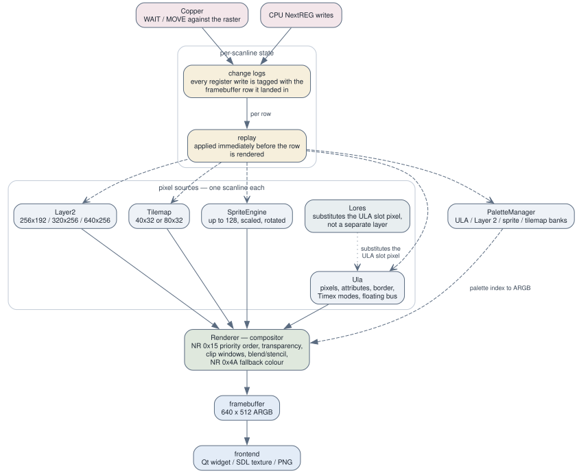

2.4 The video pipeline¶
The whole shape of the video code follows from one decision: the picture is composited once, at the end of the frame, rather than scanline by scanline as the CPU runs. That choice is cheap and fast, and it creates one hard problem which the second half of this page is entirely about. Per-layer detail — addressing modes, palettes, sprite attributes, tilemap fetch — belongs to 3.3 Video; here we are concerned with how the pieces fit together.

Layers, per-scanline replay, and the compositor.
Who renders what¶
Renderer (src/video/renderer.h, renderer.cpp) is the compositor. It owns
the Ula and Lores directly, while Layer2, SpriteEngine, Tilemap and
PaletteManager are owned by Emulator and passed in on each call.
Renderer::render_frame() walks rows 0 to 255 and calls render_row() for
each one. render_row() starts by clearing the per-layer 640-cell ARGB line
buffers to transparent, and then asks each layer in turn to paint its row:
- Layer 2 — only when it is enabled, and only inside the display area unless it is running in one of the wide modes (320 × 256 or 640 × 256). It also fills in a per-pixel priority flag taken from the palette's priority bit.
- Tilemap — across the full framebuffer width, producing per-pixel "below ULA" and "text mode" flags that the merge stage will need.
- Sprites — gated on the per-line-replayed NR 0x15 bit 0 rather than on the engine's own live flag, for the reasons given below.
- ULA — emits the native 640 pixels including the border, marking which cells are border so the compositor can apply its priority exceptions.
Three ULA-slot passes then run, in the order the VHDL applies them.
apply_lores() substitutes the LoRes pixel into the ULA slot — LoRes is not
a layer of its own; it replaces the ULA pixel before palette lookup. NR 0x68
bit 7 blanks the entire ULA output if the row's snapshot says the ULA was
disabled. And apply_ula_clip() masks off everything outside the NR 0x1A clip
window.
Finally composite_scanline() dispatches on the row's NR 0x15 layer priority
into a composite_scanline_mode<PRIO> template. There are eight
specialisations, which is what allows the per-pixel switch to fold away
entirely: modes 0 to 5 are the six orderings in the LayerPriority enum, and 6
and 7 are the blending modes. Transparency is decided against the row's NR 0x14
reference colour, and any pixel still transparent after all of that falls
through to the row's NR 0x4A fallback colour.
The change-log and replay mechanism¶
What this buys¶
Programs on this hardware routinely change video registers between scanlines, so that different bands of the same frame are drawn with different settings. That is how a Next demo paints a sky gradient down the top of the screen, how a game scrolls two Layer 2 bands at different speeds to fake parallax, and how it keeps a fixed status bar above a playfield that is scrolling underneath it. Sprite attributes get rewritten mid-frame for the same reason, to multiplex more sprites onto the screen than the hardware has slots for. These effects are not exotic; real software depends on them, and an emulator that gets them wrong produces a picture that is obviously, visibly flat.
Why it is not free here¶
Because compositing happens only after the CPU has finished the whole frame, the live value of any register at that moment is the last value the frame wrote. A program that changes the palette on every scanline would, naively, render in one flat colour. Two distinct mechanisms fix this, and it is worth being able to tell them apart.
Per-line snapshot arrays handle state that is simply read once per row. An
array of 256 entries is filled as the frame runs: Emulator::on_scanline()
calls renderer_.snapshot_fallback_for_line(row) and its siblings, and
render_row() later reads fallback_per_line_[row]. This covers NR 0x4A, the
ULA enable, the NR 0x68 stencil and blend bits, NR 0x14, the NR 0x1A clip, the
LoRes registers, the ULA border, and the tilemap scroll and fetch bases.
Change logs with rewind and replay handle state whose whole object has to
be time-travelled — an entire palette, the sprite attribute table, the
attribute plane. Each owning class keeps a baseline plus an ordered log of
(line, change) entries. The lifecycle is fixed, and identical in every class
that implements it:
| Phase | Call | When |
|---|---|---|
| Baseline | start_frame() |
Emulator::begin_new_frame() |
| Tag | set_current_line(fb_row) |
Emulator::on_scanline() |
| Record | the class's own NextREG/port write handler appends to the log and mutates live state | during emulation |
| Rewind | rewind_to_baseline() |
top of Renderer::render_frame() |
| Replay | apply_changes_for_line(row) |
before each render_row(row) |
| Drain | flush_remaining_changes() |
end of render_frame() |
The classes that carry one are PaletteManager, Layer2 (scroll and bank),
SpriteEngine (attributes), Ula (Timex screen mode, scroll, active-palette
select), Tilemap (NR 0x6B), Mmu's AttributeMux (Nirvana-class mid-frame
attribute writes), and Renderer itself (NR 0x15 priority and sprite enable).
Three details reliably bite newcomers:
- The tag is a framebuffer row, not a raw scanline.
on_scanlineconverts between them by subtractingvideo_timing_.vblank_top(), and that value is per-machine: 32 for the Next family at 50 Hz, 48 for Pentagon timing, 8 at 60 Hz. Writes that land before the visible area all coalesce onto row 0; writes after it stay out of range and are picked up by the drain, where they become the next frame's baseline. - Skipping the drain loses vblank writes forever.
rewind_to_baseline()deliberately undoes the live mutation the writer performed, and the per-row replay only covers visible rows — so a setup sequence that completes during vblank simply vanishes unless it is flushed. - The bank selectors have to come from the replayed state too. The Layer 2,
sprite and tilemap palette-bank bits live in the
Ula's replayed palette-select log, not inPaletteManager's live member. Reading the live one collapses a frame that used two banks onto whichever bank happened to be selected when the frame ended.
Two things that are not the live path¶
--delayed-screenshot-layers sets Renderer::set_layer_mask(), which forces
the masked-out layers to transparent at the compositor's input. That is
exactly what the hardware does when a layer's enable bit is clear, so priority,
blending and the fallback colour all continue to behave correctly rather than
leaving a hole. It is host-side debug state, and it is deliberately never
reset, saved or loaded.
run_sprite_side_effects() is a sprites-only pass with the identical
change-log lifecycle, run in place of the full render when render_frame() was
skipped. Sprite collision and the per-line budget overtime flag are readable by
the emulated program through port 0x303B, so they have to be computed on every
emulated frame whether or not anybody is going to look at the pixels.
The debugger's per-layer views composite through the same render_row() and
apply_* helpers as the real path, rather than through a second copy of the
compositor that would inevitably drift away from it.